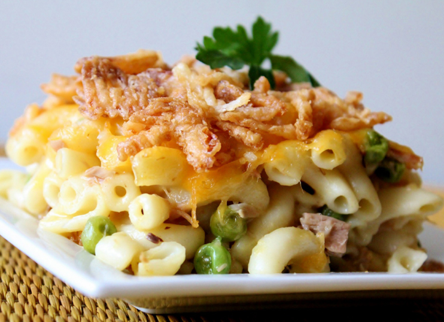

Home
Tuna Casserole

Description
This easy tuna pasta casserole is made with macaroni, creamy soup, cheese, tuna, and fried onions. It's great as leftovers, too.
What you'll need
- 3 cups cooked macaroni
- 1 (5 ounces) can tuna, drained
- 1 (10.5 ounces) can condensed cream of chicken soup
- 1 cup shredded cheddar cheese
- 1 1/2 cups French fried onions
Instructions
- Preheat the oven to 350 degrees F (175 degrees C)
- Combine cooked macaroni, tuna, and condensed soup together in a 9x13-inch baking dish; sprinkle with cheese.
- Bake in the preheated oven until bubbly, about 25 minutes. Sprinkle with fried onions; bake 5 minutes more.